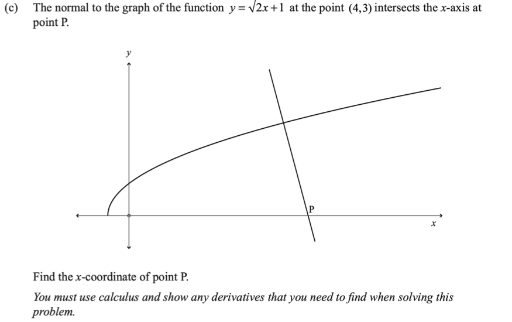

Level 3 Differentiation Walkthrough
2020 Differentiation · Q3(c)
2020 Paper
Question
The normal to \(y=\sqrt{2x+1}\) at \((4,3)\) intersects the \(x\)-axis at P. Find the \(x\)-coordinate of P.
You must use calculus and show any derivatives that you need to find when solving this problem.
Original question scan

First walkthrough idea
Focus to try first
Normal gradient and an x-intercept.
Step 1
Find the tangent gradient
Differentiate to find the tangent gradient at \((4,3)\).
Show the first step’s working
Walkthrough overview
What this question practises
This 2020 walkthrough is part of AS91578 — Apply differentiation methods in solving problems.
Method: Normal gradient and an x-intercept.
This is Question 3(c) from the 2020 NCEA Level 3 Differentiation paper for AS91578 — Apply differentiation methods in solving problems. Use the guided hints to practise the method before revealing the full working.
Calc.nz is an independent learning resource. Compare questions, diagrams, and assessment information with the official NZQA resources for AS91578.
Page updated .
Learning summary
Review the method, not only the answer
This walkthrough helps you practise normal gradient and an x-intercept. Use the hints to plan the method, then repeat the question without hints and check each step.
Check
A normal gradient is the negative reciprocal of the tangent gradient, not simply its negative.
Calculus essentials: algebra, logarithms, rules, radians and domains
Continue practising
Try a related question: 2023 Differentiation · Q1(d). Attempt it before opening working, then return to this question later.
- All 2020 Differentiation walkthroughs
- All AS91578 Differentiation years
- Practise more questions using this skill: Tangents and normals